Show the code
map <- tar_read(plot_geoms) +
geom_point(data = tar_read(climate_dat), aes(x = Longitude..x., y = Latitude..y.))
map
We have weather stations at the following points:
map <- tar_read(plot_geoms) +
geom_point(data = tar_read(climate_dat), aes(x = Longitude..x., y = Latitude..y.))
map
color_scheme_set(scheme = "teal")
dat_trunc <- tar_read(climate_dat) %>%
# filter(Date.Time < "Jan 1999") %>%
filter(Station.Name == "MAGOG")
p <- ggplot(data = dat_trunc, aes(x = Month,
y = Mean.Temp...C.,
color = Year,
group = Year)) +
geom_point() +
geom_line() +
theme_default() +
scale_color_viridis(option = "inferno") +
ggtitle("Change in Mean Temp Over Time — MAGOG")
p
We have the following parameters in the climate dataset:
Just lat, lon.
Gives name of weather station. See also: Date.Time.
I don’t know what this is yet. Someone should find out
Not all the stations have coverage throughout the entire range.
ggplot(dat_a, aes(x = Date.Time, y = Station.Name)) +
geom_line() +
ggtitle("Coverage — `A` Names") +
theme_default()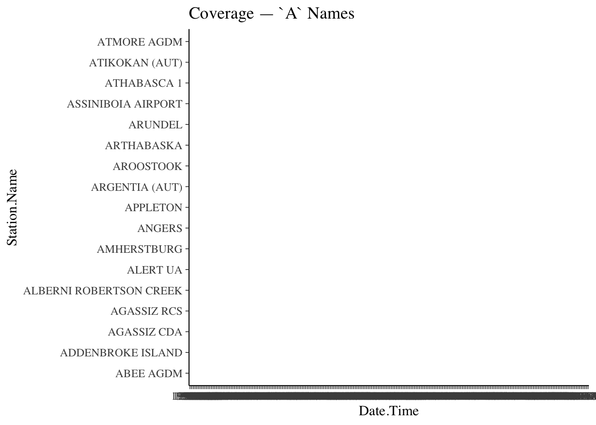
d1 <- filter(dat_b, substr(Station.Name, 2, 2) < "N")
d2 <- filter(dat_b, substr(Station.Name, 2, 2) >= "N")
p1 <- ggplot(d1, aes(x = Date.Time, y = Station.Name)) +
geom_line() +
ggtitle("Coverage — `B` Names") +
theme_default()
p2 <- ggplot(d2, aes(x = Date.Time, y = Station.Name)) +
geom_line() +
ggtitle("Coverage — `B` Names") +
theme_default()
p1
p2
c1 <- filter(dat_c, substr(Station.Name, 2, 2) < "N")
c2 <- filter(dat_c, substr(Station.Name, 2, 2) >= "N")
ggplot(c1, aes(x = Date.Time, y = Station.Name)) +
geom_line() +
ggtitle("Coverage — `C` Names") +
theme_default()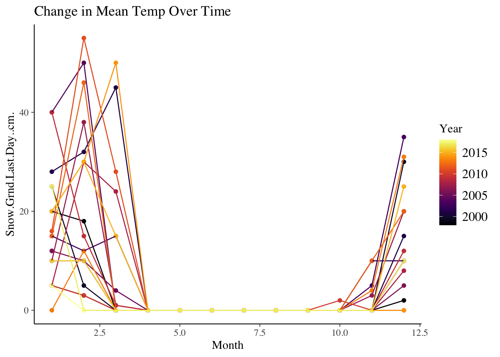
ggplot(c2, aes(x = Date.Time, y = Station.Name)) +
geom_line() +
ggtitle("Coverage — `C` Names") +
theme_default()
d1 <- filter(dat_d, substr(Station.Name, 2, 2) < "N")
d2 <- filter(dat_d, substr(Station.Name, 2, 2) >= "N")
ggplot(d1, aes(x = Date.Time, y = Station.Name)) +
geom_line() +
ggtitle("Coverage — `D` Names") +
theme_default()
ggplot(d2, aes(x = Date.Time, y = Station.Name)) +
geom_line() +
ggtitle("Coverage — `D` Names") +
theme_default()
e1 <- filter(dat_e, substr(Station.Name, 2, 2) <= "Z")
ggplot(e1, aes(x = Date.Time, y = Station.Name)) +
geom_line() +
ggtitle("Coverage — `E` Names") +
theme_default()
f1 <- filter(dat_f, substr(Station.Name, 2, 2) < "N")
f2 <- filter(dat_f, substr(Station.Name, 2, 2) >= "N")
ggplot(f1, aes(x = Date.Time, y = Station.Name)) +
geom_line() +
ggtitle("Coverage — `F` Names") +
theme_default()ggplot(f2, aes(x = Date.Time, y = Station.Name)) +
geom_line() +
ggtitle("Coverage — `F` Names") +
theme_default()g1 <- filter(dat_g, substr(Station.Name, 2, 2) < "N")
g2 <- filter(dat_g, substr(Station.Name, 2, 2) >= "N")
ggplot(g1, aes(x = Date.Time, y = Station.Name)) +
geom_line() +
ggtitle("Coverage — `G` Names") +
theme_default()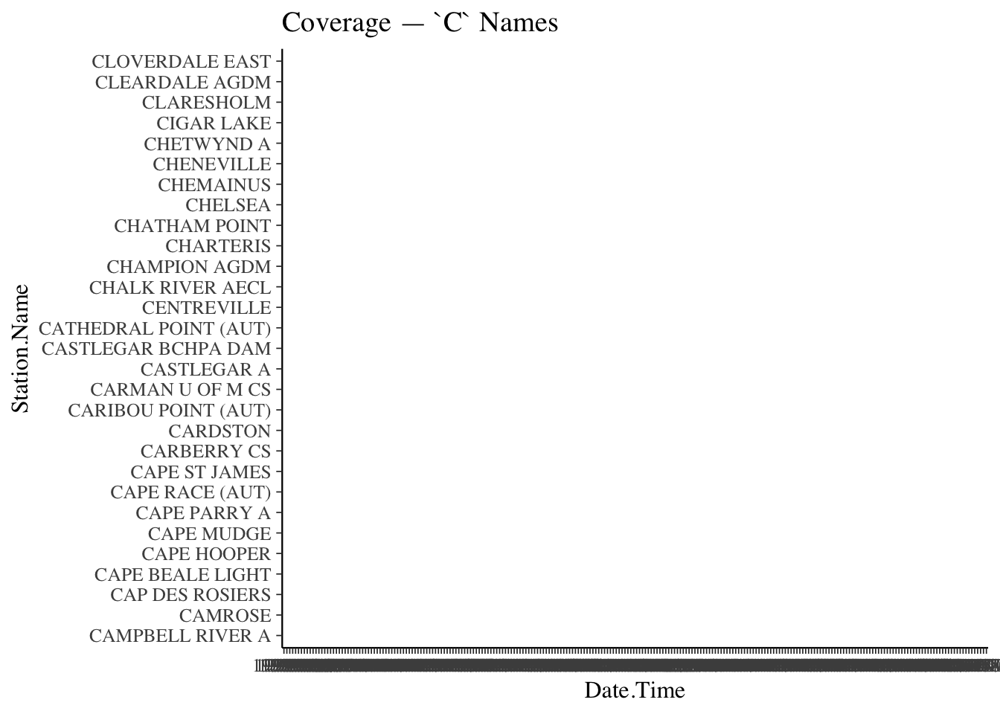
ggplot(g2, aes(x = Date.Time, y = Station.Name)) +
geom_line() +
ggtitle("Coverage — `G` Names") +
theme_default()h1 <- filter(dat_h, substr(Station.Name, 2, 2) < "N")
h2 <- filter(dat_h, substr(Station.Name, 2, 2) >= "N")
ggplot(h1, aes(x = Date.Time, y = Station.Name)) +
geom_line() +
ggtitle("Coverage — `H` Names") +
theme_default()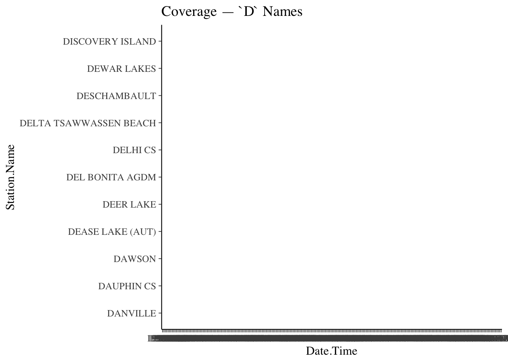
ggplot(h2, aes(x = Date.Time, y = Station.Name)) +
geom_line() +
ggtitle("Coverage — `H` Names") +
theme_default()i1 <- filter(dat_i, substr(Station.Name, 2, 2) <= "N")
ggplot(i1, aes(x = Date.Time, y = Station.Name)) +
geom_line() +
ggtitle("Coverage — `I` Names") +
theme_default()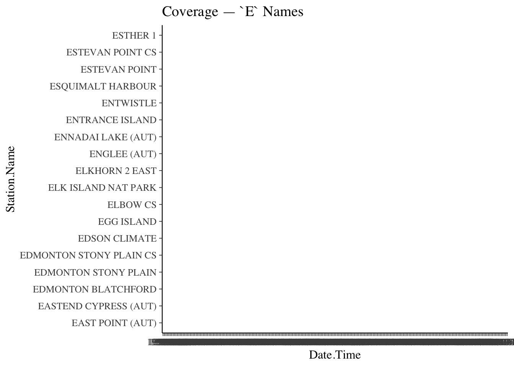
j1 <- filter(dat_j, substr(Station.Name, 2, 2) <= "Z")
ggplot(j1, aes(x = Date.Time, y = Station.Name)) +
geom_line() +
ggtitle("Coverage — `J` Names") +
theme_default()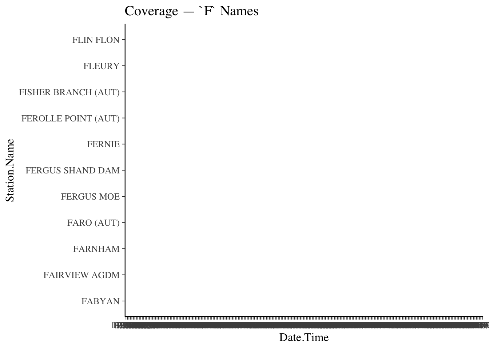
k1 <- filter(dat_k, substr(Station.Name, 2, 2) <= "Z")
ggplot(k1, aes(x = Date.Time, y = Station.Name)) +
geom_line() +
ggtitle("Coverage — `K` Names") +
theme_default()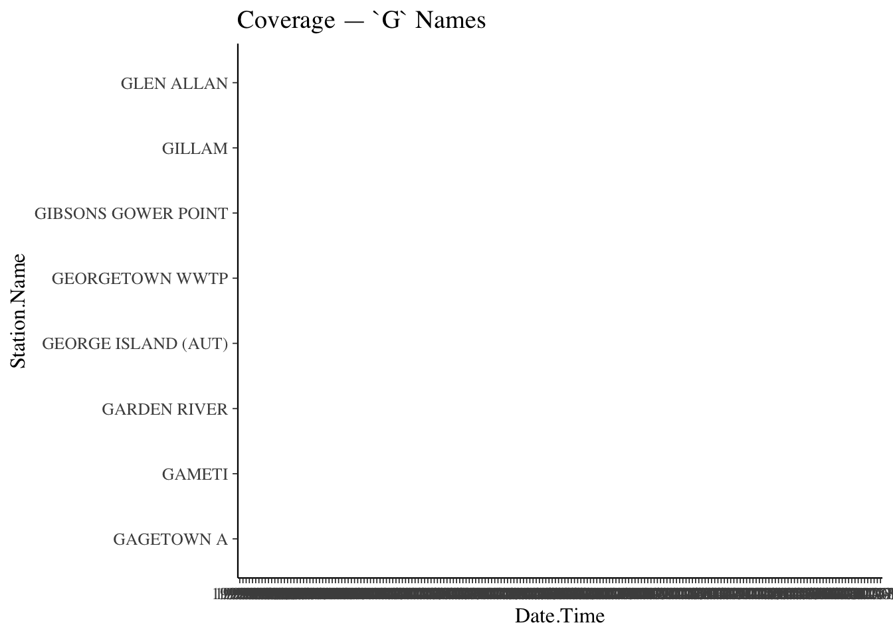
l1 <- filter(dat_l, substr(Station.Name, 2, 2) < "N")
l2 <- filter(dat_l, substr(Station.Name, 2, 2) >= "N")
ggplot(l1, aes(x = Date.Time, y = Station.Name)) +
geom_line() +
ggtitle("Coverage — `L` Names") +
theme_default()ggplot(l2, aes(x = Date.Time, y = Station.Name)) +
geom_line() +
ggtitle("Coverage — `L` Names") +
theme_default()m1 <- filter(dat_m, substr(Station.Name, 2, 2) < "N")
m2 <- filter(dat_m, substr(Station.Name, 2, 2) >= "N")
ggplot(m1, aes(x = Date.Time, y = Station.Name)) +
geom_line() +
ggtitle("Coverage — `M` Names") +
theme_default()ggplot(m2, aes(x = Date.Time, y = Station.Name)) +
geom_line() +
ggtitle("Coverage — `M` Names") +
theme_default()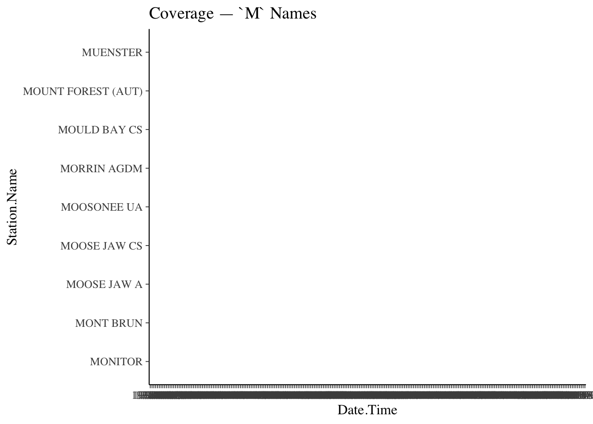
n1 <- filter(dat_n, substr(Station.Name, 2, 2) < "N")
n2 <- filter(dat_n, substr(Station.Name, 2, 2) >= "N")
ggplot(n1, aes(x = Date.Time, y = Station.Name)) +
geom_line() +
ggtitle("Coverage — `N` Names") +
theme_default()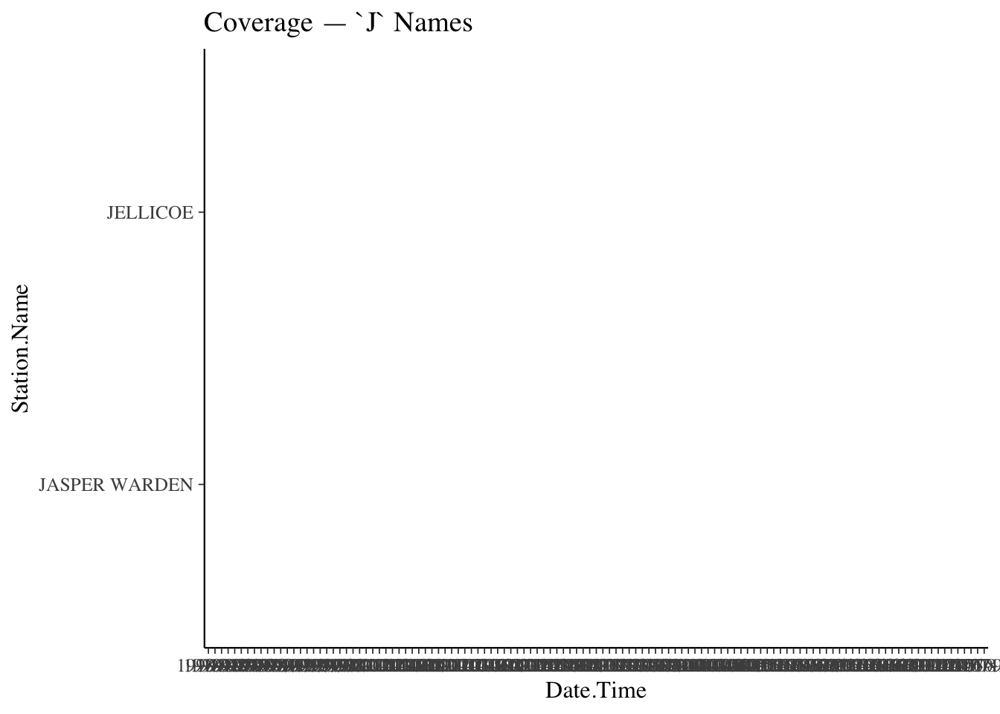
ggplot(n2, aes(x = Date.Time, y = Station.Name)) +
geom_line() +
ggtitle("Coverage — `N` Names") +
theme_default()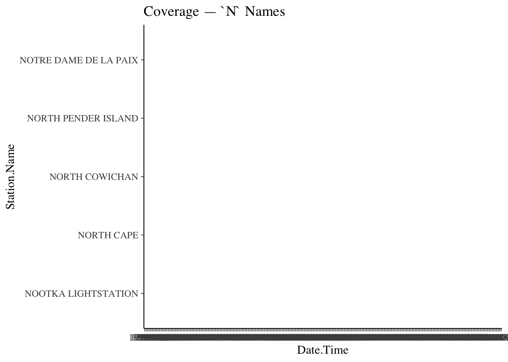
o1 <- filter(dat_o, substr(Station.Name, 2, 2) < "N")
o2 <- filter(dat_o, substr(Station.Name, 2, 2) >= "N")
ggplot(o1, aes(x = Date.Time, y = Station.Name)) +
geom_line() +
ggtitle("Coverage — `O` Names") +
theme_default()ggplot(o2, aes(x = Date.Time, y = Station.Name)) +
geom_line() +
ggtitle("Coverage — `O` Names") +
theme_default()p1 <- filter(dat_p, substr(Station.Name, 2, 2) < "N")
p2 <- filter(dat_p, substr(Station.Name, 2, 2) >= "N")
ggplot(p1, aes(x = Date.Time, y = Station.Name)) +
geom_line() +
ggtitle("Coverage — `P` Names") +
theme_default()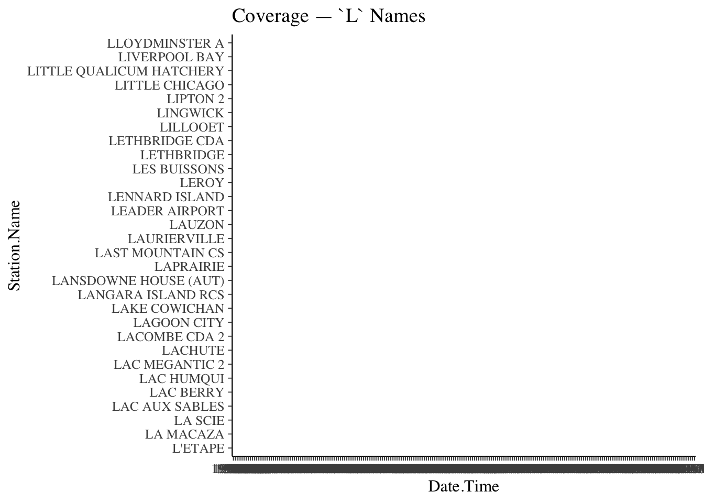
ggplot(p2, aes(x = Date.Time, y = Station.Name)) +
geom_line() +
ggtitle("Coverage — `P` Names") +
theme_default()q1 <- filter(dat_q, substr(Station.Name, 2, 2) <= "Z")
ggplot(q1, aes(x = Date.Time, y = Station.Name)) +
geom_line() +
ggtitle("Coverage — `O` Names") +
theme_default()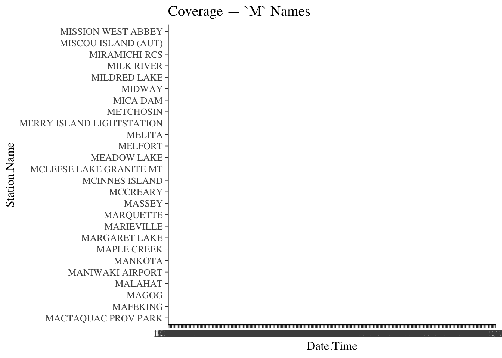
r1 <- filter(dat_r, substr(Station.Name, 2, 2) <= "Z")
ggplot(r1, aes(x = Date.Time, y = Station.Name)) +
geom_line() +
ggtitle("Coverage — `R` Names") +
theme_default()s1 <- filter(dat_s, substr(Station.Name, 2, 2) <= "P")
s2 <- filter(dat_s, (substr(Station.Name, 2, 2) > "P") & (substr(Station.Name, 2, 2) <= "T"))
s3 <- filter(dat_s, substr(Station.Name, 2, 2) > "T")
ggplot(s1, aes(x = Date.Time, y = Station.Name)) +
geom_line() +
ggtitle("Coverage — `S` Names") +
theme_default()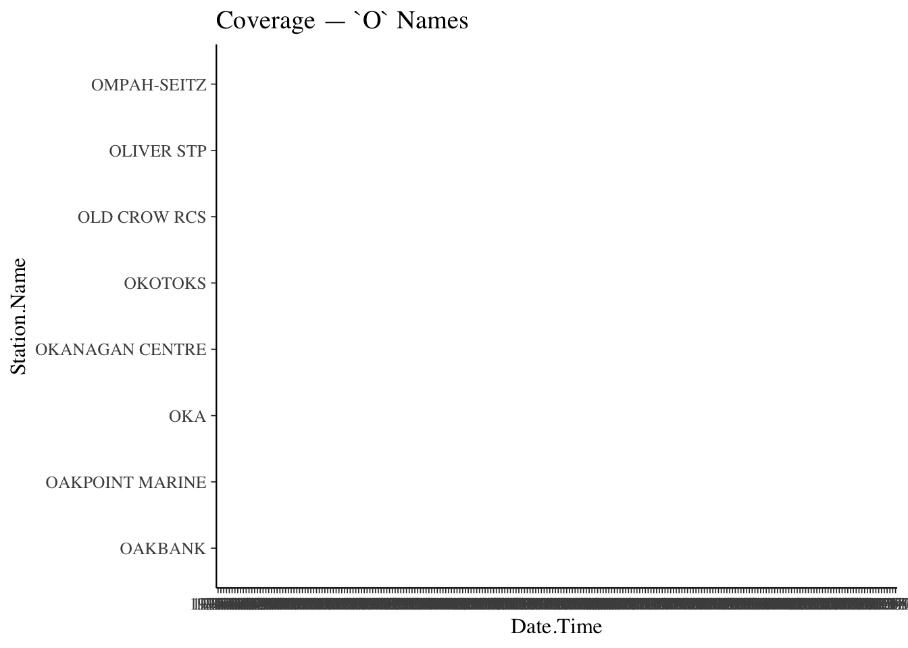
ggplot(s2, aes(x = Date.Time, y = Station.Name)) +
geom_line() +
ggtitle("Coverage — `S` Names") +
theme_default()
ggplot(s3, aes(x = Date.Time, y = Station.Name)) +
geom_line() +
ggtitle("Coverage — `S` Names") +
theme_default()t1 <- filter(dat_t, substr(Station.Name, 2, 2) <= "Z")
ggplot(t1, aes(x = Date.Time, y = Station.Name)) +
geom_line() +
ggtitle("Coverage — `T` Names") +
theme_default()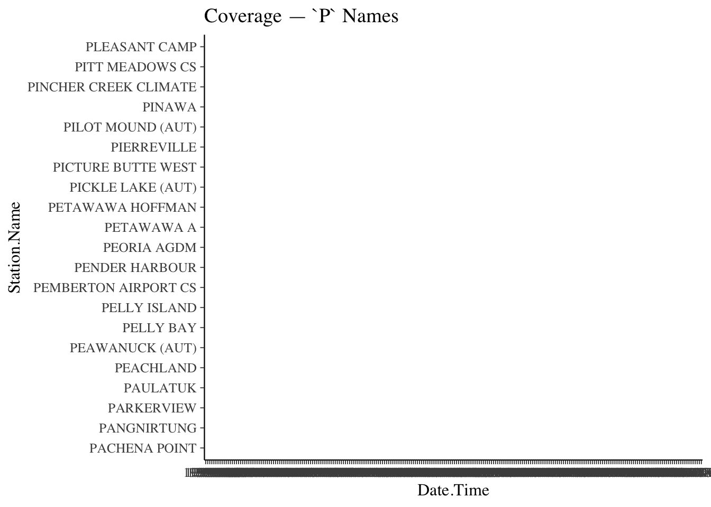
u1 <- filter(dat_u, substr(Station.Name, 2, 2) <= "Z")
ggplot(u1, aes(x = Date.Time, y = Station.Name)) +
geom_line() +
ggtitle("Coverage — `U` Names") +
theme_default()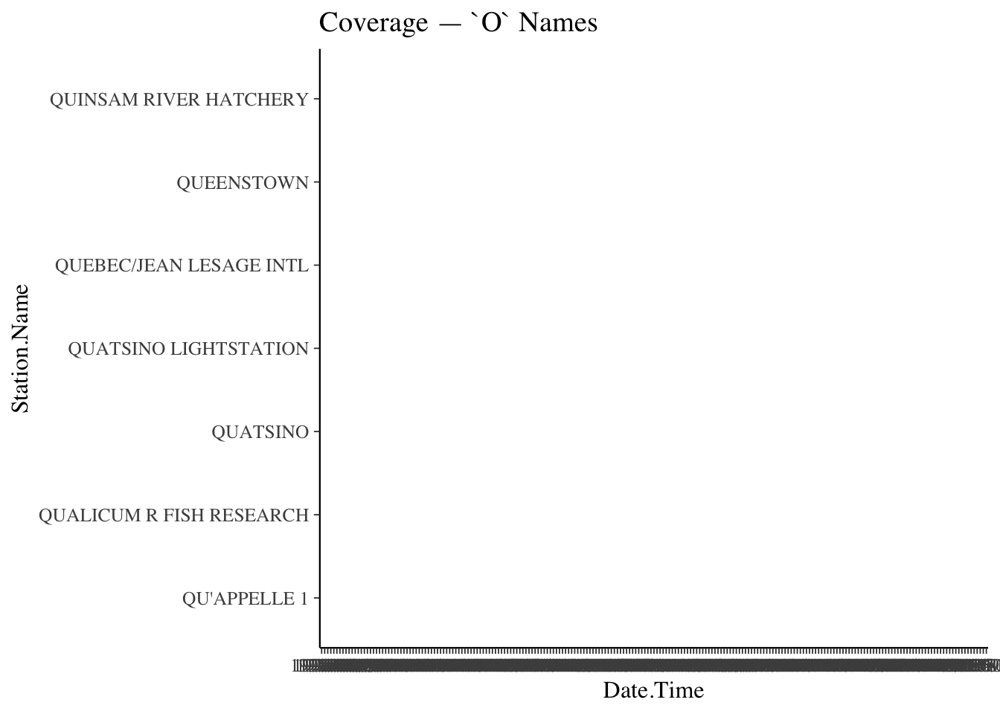
v1 <- filter(dat_v, substr(Station.Name, 2, 2) <= "Z")
ggplot(v1, aes(x = Date.Time, y = Station.Name)) +
geom_line() +
ggtitle("Coverage — `V` Names") +
theme_default()w1 <- filter(dat_w, substr(Station.Name, 2, 2) <= "Z")
ggplot(w1, aes(x = Date.Time, y = Station.Name)) +
geom_line() +
ggtitle("Coverage — `W` Names") +
theme_default()Note: No X names.
x1 <- filter(dat_x, substr(Station.Name, 2, 2) <= "Z")
ggplot(x1, aes(x = Date.Time, y = Station.Name)) +
geom_line() +
ggtitle("Coverage — `X` Names") +
theme_default()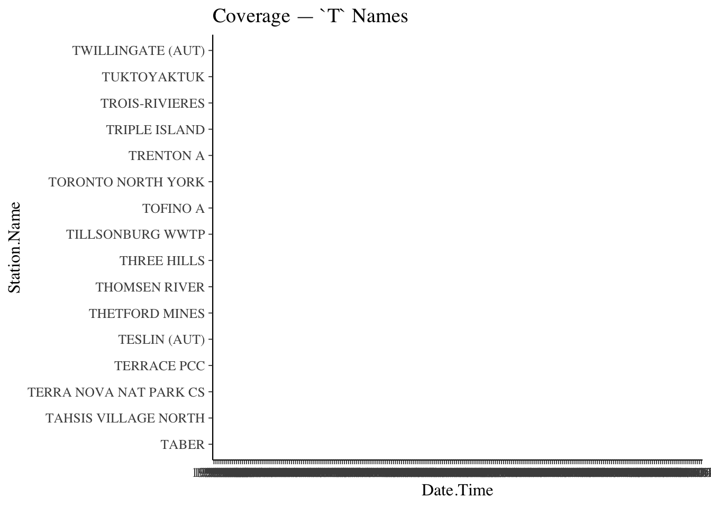
y1 <- filter(dat_y, substr(Station.Name, 2, 2) <= "Z")
ggplot(y1, aes(x = Date.Time, y = Station.Name)) +
geom_line() +
ggtitle("Coverage — `Y` Names") +
theme_default()Note: there are no Z names.
z1 <- filter(dat_z, substr(Station.Name, 2, 2) <= "Z")
ggplot(z1, aes(x = Date.Time, y = Station.Name)) +
geom_line() +
ggtitle("Coverage — `Z` Names") +
theme_default()Also don’t know what this is yet, but I can guess…
dat_trunc <- tar_read(climate_dat) %>%
# filter(Date.Time < "Jan 1999") %>%
filter(Station.Name == "MAGOG")
p <- ggplot(data = dat_trunc, aes(x = Month,
y = Mean.Max.Temp...C.,
color = Year,
group = Year)) +
geom_point() +
geom_line() +
theme_default() +
scale_color_viridis(option = "inferno") +
ggtitle("Change in Mean Max Temp Over Time — MAGOG")
p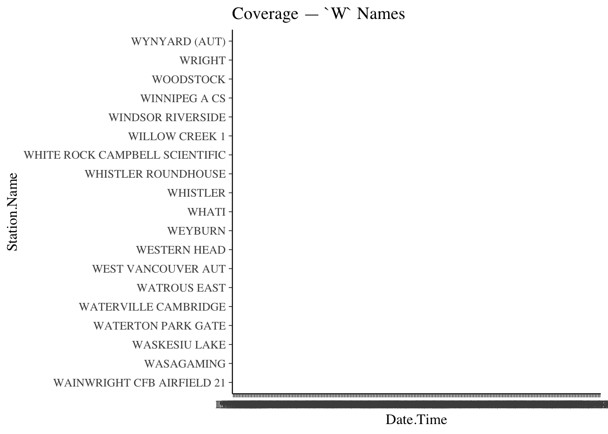